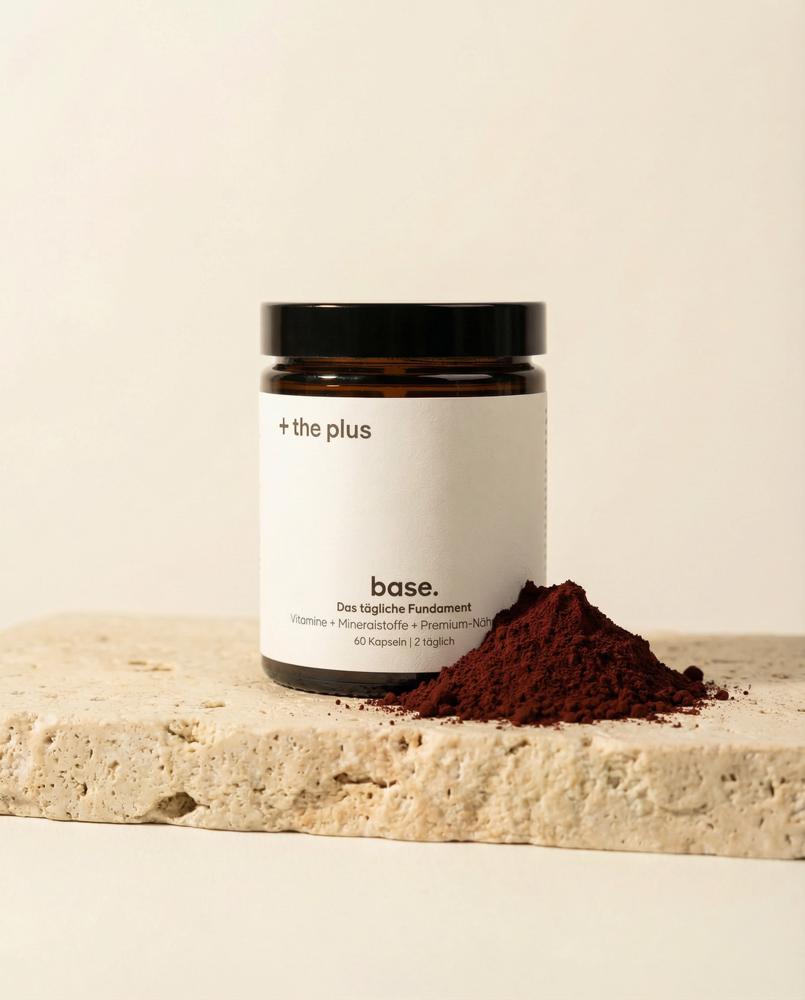
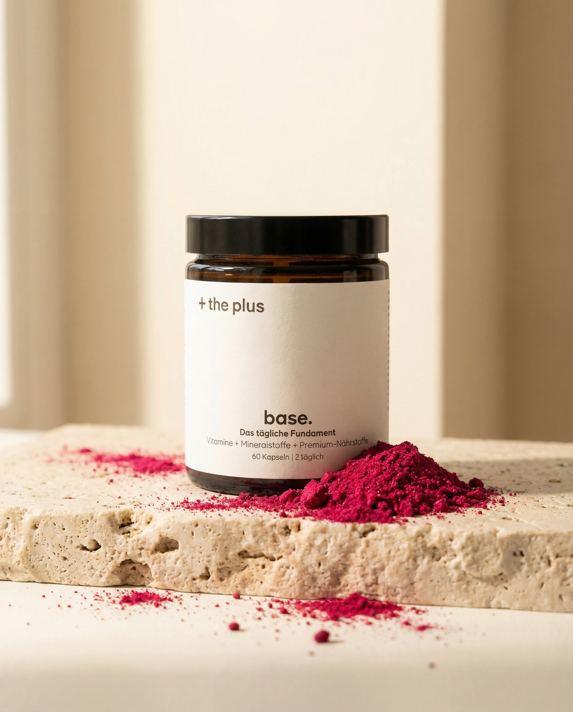
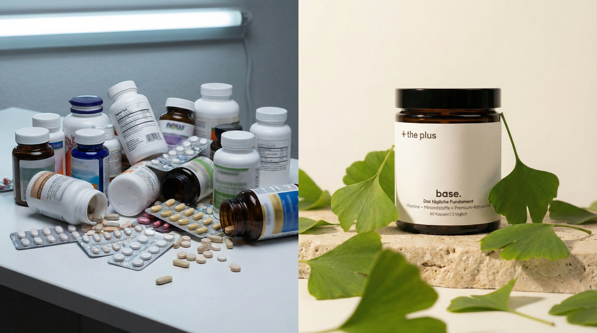
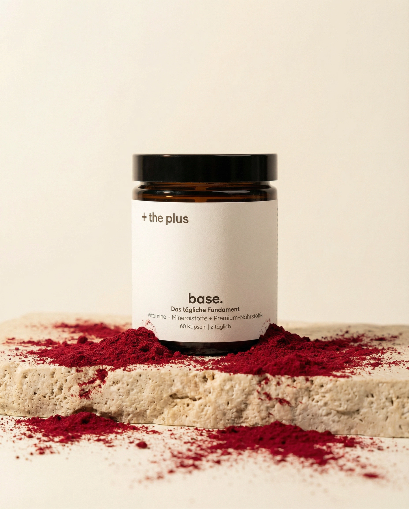

Das Molekül hinter konstanter Schärfe.
In jeder Zellmembran deines Gehirns steckt Phosphatidylserin. Warum es trotzdem in 99 % aller Multivitamine fehlt, und was das für Gedächtnis und Konzentration bedeutet.

Mitochondrien-Biogenese. Was PQQ tatsächlich leistet.
Dass Coenzym Q10 in Supplements steht, ist kein Geheimnis. Dass PQQ die Zahl der Mitochondrien in deinen Zellen erhöhen kann, schon. Wie das funktioniert, und wie Q10 und PQQ zusammen arbeiten.

Die EU-Referenzmenge ist nicht die Wirk-Dosis.
Auf jedem Multivitamin steht „100 % der täglichen Referenzmenge". Das klingt beruhigend. Es verschweigt nur einen zentralen Punkt: die EU-Referenzmenge ist die Untergrenze, nicht die Wirkschwelle. Ein Erklärstück.

Langstreckenflug. Was zwölf Stunden mit deinen Zellen machen.
Jetlag ist, was du spürst. Was du nicht spürst, ist messbar: erhöhte kosmische Strahlung, Dehydration unter fünf Prozent Luftfeuchtigkeit, gestörte Schlafzyklen. Was sich daraus summiert, und was sich dagegen tun lässt.
Der Compound Effect. Dreißig Jahre als Rechnung.
Kleine tägliche Entscheidungen multiplizieren sich über Zeit. In Finanzen ist das selbstverständlich. In der Gesundheit nicht, obwohl die Physiologie exakt derselben Logik folgt. Eine Rechnung mit realen Zahlen.

Warum wir keinen Rabatt geben.
Black Friday, Sommer-Sale, 50%-Aktionen, die klassischen Rabatt-Rhythmen der Konsumwelt. Warum + the plus bewusst darauf verzichtet, und was das mit Formulierung und Produktion zu tun hat.

Methylcobalamin vs. Cyanocobalamin.
Dein Körper kann Cyanocobalamin (die billige B12-Form) nur verarbeiten, indem er es zuerst in Methylcobalamin umwandelt. Bei manchen Menschen funktioniert diese Umwandlung gut, bei manchen schlecht. Warum Methylcobalamin die sichere Wahl ist.
Performance unter Druck. Physiologie schlägt Willensstärke.
„Reiß dich zusammen" ist keine Strategie, die unter echten Spitzen-Anforderungen länger als ein paar Minuten trägt. Was dann trägt, ist die Infrastruktur darunter: Schlaf, Blutzucker, Nährstoff-Status, Mikrovaskularisation. Ein Überblick.

Grundversorgung ist nicht Fundament.
Ein Multivitamin deckt die Grundversorgung ab, das ist nicht nichts, aber es ist auch nicht das Fundament, auf dem zehn Stunden Denkarbeit jeden Tag stehen. Was den Unterschied macht, und warum die Kategorie bisher dazwischen fehlte.

Die Biologie des Abends.
Die meisten Unternehmer funktionieren abends noch. Das heißt nicht, dass sie präsent sind. Was nach einem langen Arbeitstag im Kopf biochemisch passiert, und warum Abendstunden mit der Familie oft die ehrlichste Auswertung eines Tages sind.

Das Antioxidans, das bis ins Gehirn kommt.
Vitamin C ist wasserlöslich, Vitamin E fettlöslich, beide erreichen das zentrale Nervensystem kaum. Astaxanthin dagegen passiert die Blut-Hirn-Schranke. Was diese biologische Besonderheit für Neuroprotektion bedeutet.

Proprietary Blends. Die Versteck-Taktik der Industrie.
„Proprietary Blend: 850 mg Special Focus Complex": klingt beeindruckend. Sagt nichts. Warum die Supplement-Industrie diese Praxis etabliert hat, und was Verbraucher wirklich wissen sollten, bevor sie kaufen.